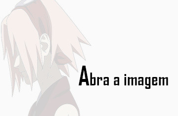

Sakura Haruno
Sakura Uchiha (うちはサクラ, Uchiha Sakura; batizada Haruno (春野) inicialmente) é uma kunoichi de nível jōnin do clã Uchiha, após se casar, de Konohagakure. Ela é designada como um membro do Time Kakashi, mas rapidamente encontra-se mal preparada para os deveres de um ninja e as complicações das vidas de seus companheiros de equipe. Treinando sob a tutela de sua mestra, Tsunade, ela se torna uma kunoichi mais forte e uma excelente ninja médica, sendo capaz de enfrentar os desafios de uma vida como um ninja, bem como ajudar e proteger seus amigos e entes queridos quando eles precisarem dela. Anos após a Quarta Guerra Shinobi, ela forma sua própria família com Sasuke Uchiha.
(Sakuha Haruno. By: Pinterest)
Em seu núcleo, Sakura é compassiva, determinada e corajosa, sendo disposta a se sacrificar e combater aqueles que ela sabe que são superiores a ela para defender seu time. Sakura não desiste de uma luta, notando que ela herdou o hábito de de sua mestra de desprezar a derrota.
Aparência de Sakura haruno
Preencha o Formulário , e veja o resultado!
Começando sua jornada como uma ninja
Ao ser designada como membro do Time 7, Sakura passa a maior parte do seu tempo seguindo Sasuke, mesmo esse não estando interessado nela. Ao mesmo tempo, Naruto tentava ficar com Sakura, apesar do fato de ela não ter nenhum interesse nele e sempre o dar surras. Quando Kakashi administrou um teste com os três para ver quanto são fortes para se tornar Genin, Sakura preocupou-se somente com Sasuke em vez de ajudar Naruto.
Após Kakashi dizer para Sakura, Naruto e Sasuke sobre o que eles deveriam fazer, eles perceberam que eles seriam obrigados a trabalhar em equipe, mesmo que isso significasse quebrar as regras. Esta revelação tem sido o objetivo do teste desde o começo, então Kakashi passou os três, formando oficialmente o Time 7.
(Time Kakashi. By: Pinterest)
Sakura acompanhada com o resto de sua equipe em sua primeira missão no País das Ondas, eles deveriam escoltar o construtor de pontes, Tazuna. Enquanto estava lá, Kakashi administrava uma treinamento para escalar árvores usando o chakra, Kakashi e Sakura foram os primeiros a concluírem em sua primeira tentativa. Quando eles são mais tarde atacados por Zabuza e Haku, Sakura foi ordenada por Kakashi para proteger Tazuna e ficar perto dele, enquanto Kakashi e Sasuke lutam contra os inimigos. No entanto, quando Sasuke estava confrontando Haku, Sakura se desculpou com Tazuna e jogou uma Kunai em Haku, só para ele pegá-la, mas criou uma abertura para naruto acertá-lo e se juntar à batalha. Depois de sua batalha, Sakura notou Naruto e perguntou onde estava Sasuke. Quando Naruto olhou para o lado e não respondeu, ela adivinhou o que tinha acontecido, e rapidamente escoltou Tazuna ao corpo de Sasuke, onde Sakura violou a Regra Shinobi nº 25 de não mostrar qualquer tipo de emoções, chorando pela perda de Sasuke. Quando Sasuke acordou, Sakura ficou aliviada que ele estava vivo. Assim que a missão foi concluída, o Time Kakashi voltou a Konoha.
(Time Kakashi:Em sua 1º Missão , escoltar o construtor de pontes, Tazuna .)
Casamento com Sasuke Uchiha
Sakura acompanhou Sasuke durante suas viagens para se redimir. Durante esse tempo, eles se casaram e Sakura ficou grávida de seu filho. Isso levou ao nascimento de sua filha, Sarada.
Sarada simbolizava a restauração de seu clã e o amor de Sasuke por Sakura. Depois que ela nasceu, eles viveram juntos como uma família normal por alguns anos antes de Sasuke sair de casa para uma missão importante que o afastaria de sua família por anos.
- 